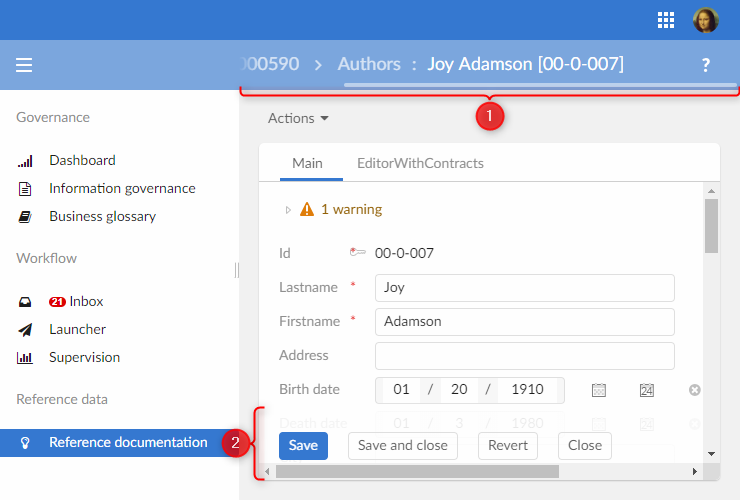
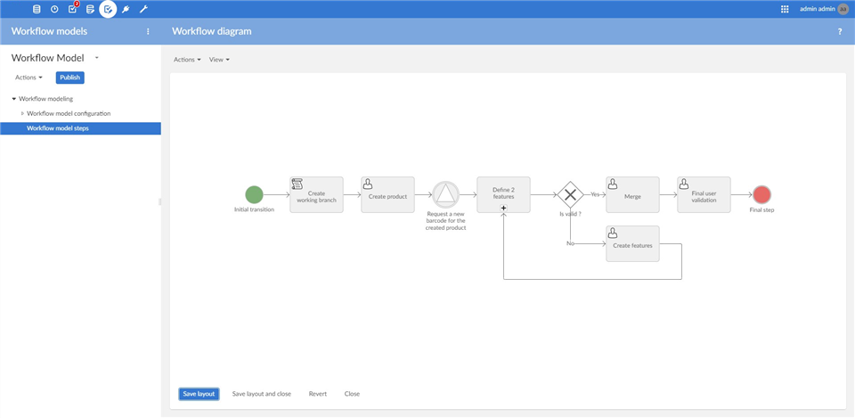
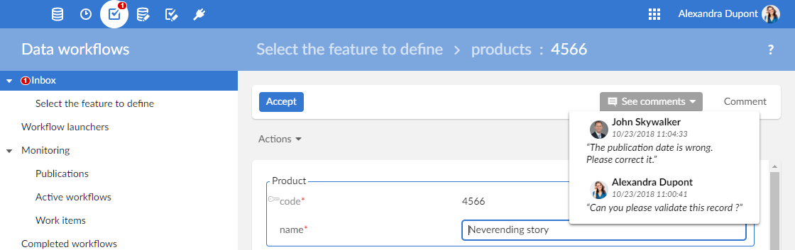

5.9.3
5.9 service packs
5.9.3 released on March 25, 2019 for:
New branding: The EBX® logo has been updated so as to reflect the new product name: TIBCO EBX®. This renaming also impacts the product documentation and the Javadoc, in which you will now find the following names: TIBCO EBX® and EBX®. The logos have also been updated in all the documentation. As far as the user interface is concerned, a new shade of blue has been implemented and replaces the former, lighter, EBX® blue.
New versioning: The TIBCO Software Inc. Release Version Schema Policy is now enforced and fully applied. This Policy is composed as follows: <major>.<minor>.<servicePack>. What used to be called Fix A, B, C etc. will now be an increment of the latest Service Pack number. The concept of "Fix" will no longer exist.
Backward compatibility: the 'Welcome message' and 'Window name' fields no longer support HTML. A text containing HTML tags is now escaped. In order to display an HTML entity, an alternative is to use the unicode number corresponding to the entity.
5.9.0 fix B released on January 21, 2019 for:
Copy-paste in Grid edit: the former limitation (detected in version 5.9.0) has been removed, it is now possible to paste in foreign keys referring to a primary key which is not a simple string field.
New parameters for servlet URL: New parameters for UI servlet URL in ebx.properties.
The issue on Oracle WebLogic server version
12.2.1.3, detected since version 5.9.0, for the TIBCO EBX® redeployment, is fixed. See Installation note for WebLogic 14c for more information.The issue regarding the HTTP Authorization header override on Microsoft Internet Explorer or Edge Web browsers, detected since version 5.9.0, is fixed. See CP-16355 and HTTP Authorization header policy for more information.
5.9.0 fix A released on December 10, 2018 for:
This fix includes minor layout improvements that will ensure a smoother display of the user interface.
Similarly to the
JavaScriptCatalog.ebx_setWorkspaceTitlethat was recently added in version 5.9.0, this fix includes the methodJavaScriptCatalog.ebx_getWorkspaceTitlethat allows retrieving the title of the current workspace. For more information, please refer to the corresponding Javadoc.
5.9.0 released on October 26, 2018.
Overview of 5.9.0
Some of the most notable features offered by this release are:
New Skin renovates the graphical aspect of the user interface.
The REST Toolkit is a Java API facilitating the development of custom RESTful services.
The workflow diagram now provides a BPMN-like representation of workflow models.
A new database is supported, SAP HANA, and an inter-database migration service is available.
Concerning supported environments, this release brings some notable changes that are documented in the section Changes on supported environments.
Attention
Before proceeding with the upgrade of an existing environment, ensure that you have carefully read the Version upgrade section.
User experience
New Skin

Modal pop-up window (1) | Modal pop-up windows have been removed from most EBX® screens. Instead, the requested content overlaps the workspace and a breadcrumb allows the user to return to the previous content. |
Translucent bottom bar (2) | The new bottom bar displayed for forms is now translucent. This allows the end-user to become more aware that the page can be scrolled. More technical details below. |
Hierarchical views | Action buttons of hierarchy nodes are now displayed to the left of each node (no longer to the right). |
Tabs with home icon | On a record form, when tabs are enabled in the data model definition of the table, the main tab used to be displayed with a home icon. This icon is no longer displayed (the 'Main tab label' is still displayed; by default, this label is 'Main'). As a consequence, the existing Java methods |
Dataset tree structure | The displayed record is still displayed below the current table but is no longer displayed with a selected style. |
Filter icon and filter pane | The magnifying glass icon for filtering has been replaced with a funnel icon |
 . Actions that remove all filters or quickly apply a given filter have been moved to the filter pane.
. Actions that remove all filters or quickly apply a given filter have been moved to the filter pane. Find in hierarchy
A new search pane 'Find in hierarchy' is now available for hierarchical views.
As opposed to filtering, it allows the user to position the members whose label matches the search criteria while keeping the hierarchy displayed. The matched member is highlighted and opened, i.e. its first-level children are displayed. Two buttons (next and previous) are provided to find the following or the previous member matching the search criteria.
This implementation is explicitly announced as a beta version since it contains some limitations, particularly:
it is only available for pure recursive hierarchical views,
the search is only applied to the labels of the members of the recursive dimensions.
Using filters defined in associations
When creating an associated record directly from an association, the filters defined in the data model are now evaluated. Applied filters include the one defined by the association and those defined by the foreign key(s) involved in the association. As a consequence, it is now forbidden to create an associated record that does not comply with these filters.
The feature includes the possibility to customize the message displayed to the end-user when attempting to create an associated record that does not comply with the defined filters. If the filter is defined by the association, a new message property is available, see association filter for more information; for a filter defined on a foreign key, the existing validation message is reused.
These filters are also evaluated when displaying the list of records that can be associated directly from an association (however, in the case of an association over a link table, the filter defined by the foreign key to the source table is ignored).
User interface advanced customization
This release offers new capabilities to customize the user interface through additional configuration or Java programming.
User services and record forms
It is now possible to use custom user services to replace default model-driven record forms. Regarding UIForm, it allows implementing more advanced user interfaces.
See UserServiceRecordFormFactory for more information.
Enriched context for record creation
When a record is being created from a foreign key field or from an association, the Java API now provides information about the source record. This new information is available in table triggers and in the new access rule for create.
For more information, see NewRecordContext and the two interfaces extending it.
New properties for toolbar actions
It is now possible to define if the service is to be launched in the current context or in a web component. In the latter case, it is possible to specify values for the declared parameters of the service as well as the characteristics of the modal containing the service.
These options are available both in the Data Modeling Assistant and via the Java API.
Note
In order to be available as a Web Component in a toolbar action, a service must be declared as such. See WebComponentDeclarationContext.setAvailableAsToolbarAction.
Layout capabilities
With New Skin, an inner white border is always displayed on all workspaces. For developers who exceptionally want to have full width and height components (as the grid edit), a new method isPaddingEnabled() has been added to UIFormPane, UserServicePane and UserServiceRawPane.
Along with full height, the bottom bar is now translucent; the JavaScript function obtained through UIJavaScriptWriter.addJS_addResizeWorkspaceListener gives a second parameter to the JavaScript listener in order to not take into account the bottom bar height. Developers can now size their components to display to the back of the bottom bar.
Perspectives configuration
Perspective activation and menu items include a new "allowed device" property.
This property allows to specify devices that can display the perspective or menu item. Currently only two devices are supported: "EBX® Web Application" and "EBX® GO".
For more information, see Perspective creation and Child perspective menu.
Note
This feature will be supported in the next version of EBX® GO that is expected in a few months.
Selecting a perspective and a perspective action
A new attribute has been added to perspective actions: the action unique name. This new optional attribute is used by new Java API to select a perspective action. Also, methods to select a perspective have been added.
Web component API: UIHttpManagerComponent.selectPerspective and UIHttpManagerComponent.selectPerspectiveAction.
UIResourceLocator: UIResourceLocator.getURLForPerspectiveSelection and UIResourceLocator.getURLForPerspectiveSelection.
UIJavaScriptWriter: UIJavaScriptWriter.addJS_switchToPerspectiveAction.
Security on exit redirection
It is now possible to restrict the URL used to redirect the end-user at the end of a Web Component session (as a reminder, this redirection can be specified either by means of the Web Component redirect parameter, or through the 'Exit policy' in the user interface configuration). In the 'Administration' section, by selecting 'User interface configuration > Advanced perspective', then the 'Exit policy' form, it is possible to specify the list of authorized domains and whether HTTPS is mandatory for each domain.
For more information, see Exit policy.
New parameters for servlet URL
Two new parameters (ebx.servlet.http.ui.path and ebx.servlet.https.ui.path) are added to ebx.properties in order to allow the customization of the UI servlet path in the URL.
If they are not specified, they default to "ebx-ui/". See URLs computing for more information.
Permissions
New access rules applied during record creation
In order to bypass the existing AccessRule limitation which prevents dissociating a record creation from a column display, a new kind of access rule has been added. Once set on a record node, such a rule will be evaluated each time a record is created, in addition to any other AccessRule that might also be set on this node.
For more information, see AccessRuleForCreate.
Permission evaluation in the perspective menu
When displaying the perspective menu, permissions are now evaluated before adding any action of the "service" type. As a consequence, services that are not allowed for the user will no longer be displayed.
Also, to identify this new context in the service permission rules, the new toolbar location ToolbarLocation.PERSPECTIVE_MENU has been added.
Workflow
Workflow diagrams

In order to help modelers have a clear view of the workflow model they are designing, a BPMN-like workflow diagram is now available.
From the hierarchical view toolbar, it can be accessed by clicking on the button with the following icon: .
Some features of this view:
nodes and links are movable, the layout can be customized and saved;
a grid can be displayed, which is helpful to align nodes and links;
it is also possible to zoom in/out, revert to a previously saved state, and export to PNG/SVG format.
This view is a service with limited edition abilities: it is only possible to modify existing steps, and links still need to be modified through the hierarchical view.
See Editing the workflow diagram for more information.
Workflow inbox counter
The workflow inbox counter is now refreshed asynchronously, even when no action has been launched. Two parameters have been added to the configuration of workflows under the section 'Temporal tasks' to configure this behavior.
See Workflow inbox counter configuration for more information.
Comment history on a process instance
Since it is more intuitive to have the possibility to read previous comments before leaving one, it is now possible to see all the comments of a workflow directly from the user task.

Workflow miscellaneous
Clear history of selected workflows | In the workflow history table view, one can now remove the history of workflows that have been manually selected. To complete the cleaning, a dataspace purge will have to be executed. See Backward compatibility for more information regarding the new procedure for deleting history data. |
Add a new scheduled task | The new |
Duplicate a step | In the workflow modeling, one can now duplicate a step that was previously defined. To facilitate reuse, the new step is created without parents. It can then be relinked to another existing step. |
New built-in script to remove a record or a list of records | It is now possible to use a built-in script task to delete records, provided that the following properties are specified: the dataspace, dataset and XPath which identify the record(s). |
New Java API to retrieve process instances from a publication name | When a workflow model is updated and republished with the same publication name, it was not possible to retrieve the workflows that were launched beforehand (the publication name is reset to be reused). To retrieve workflows from their launching publication name (the publication name with which they are launched), including the ones whose publication is no longer active, two new methods have been added to the Java API: |
New java API to retrieve the original publication name from a published process | A new method has been added in order to retrieve the original publication name: |
New columns added to facilitate sorting and filtering on publication names | The publication structure has changed and the original publication name is now stored in the 'Publication table'. Two new columns have been added for both
By default, they are hidden on the different views of the Workflow section (Inbox/Active workflows/Work items/Completed workflows) but these columns are available for custom views. |
Improved publication labels | The initial publication name is now stored and can be displayed even if the publication has been disabled or unpublished.
|
Improved process labels | Legacy display of process labels also contains the publication name: the publication name is saved and thus displayed all the time. The template is as follows:
|
Data validation
Validation rules on null values
It is now possible to define constraints on null values using the validation rule editor in the Data Model Assistant. See validation rules for more information.
Non-blocking validation rules
It is now possible to specify the behavior of a validation rule defined on fields, when a user submits a form with validation errors. That is, it is now possible to indicate whether an input that would violate a validation rule will be rejected or not when submitting a form. See validation rules for more information.
Validation settings
A new class has been added to specify the settings when validating a dataset, a table or a record. This new class includes new properties that allow to specify:
if the validation of a dataset, a table or a record must wait until the end of a concurrent validation that is being performed by another process.
that the result of the validation of a dataset or a table must not be added to the logs generated by EBX®.
See ValidationSpec for more information.
Disabling validation for mass update
It is now possible to disable the incremental validation of a dataset during the execution of a procedure. The use of this new feature may be useful when performing mass modifications during a procedure. That is, disabling incremental validation prevents the validation of each update performed during a procedure and it can then lead to important performance improvements during mass updates.
See ProcedureContext.disableDatasetValidation for more information.
Resetting validation reports
New methods have been added to the Java API to reset the validation report of a dataset, a table or of the datasets contained in a dataspace.
See Adaptation.resetValidationReport, AdaptationTable.resetValidationReport and AdaptationHome.resetValidationReports for more information.
Dynamic validation messages on foreign key filters
It is now possible to specify dynamic validation messages on programmatic filters defined over foreign key constraints.
See TableRefFilter.getValidationMessage for more information.
Validation messages threshold
A new method has been added to indicate if a validation report item is related to a constraint that has reached the threshold defined by the property ebx.validation.constraints.messages.threshold in the EBX® main configuration file (ebx.properties).
See ValidationReportItem.isValidationMessageThresholdItem for more information.
Data services
REST Toolkit
It is now possible to develop custom REST API using JAX-RS 2.1 annotations. A REST service operation is implemented by a Java method. The JSON media type is supported for the body content by using the Java API for JSON Binding (JSON-B) that can automatically map JSON to a Java type; for example a Data Transfer Object (DTO). Other media types are available, please refer to the documentation for more details. Extended components have been added to use the EBX® API:
annotations to describe resources or to grant REST anonymous access to a given EBX® resource;
injectable built-in objects that provide various useful APIs, for example to execute EBX® procedures on behalf of the current user or to build URLs without worrying about configuration (for example proxies or encoding);
logging and debugging utilities.
Attention
After upgrading an existing EBX® configuration, a new main logging category should be configured. See How to upgrade an installed environment for more information.
See REST Toolkit for more information.
Built-in RESTful services
The built-in RESTful services have been improved on the following topics:
Data operations | Improves the JSON meta data value type for See Content of simple type for more information. |
Paginated access | The pagination context has been updated to improve API performance. The URL for the The See Table parameters for more information. |
Authentication | When See Request header |
Token authentication | When using the EBX® default directory, the token creation prompts the user to change their password. The password change can be done through the new Change password operation. The token authentication method is now always supported and the EBX® property See |
Check | The request header 'Content-Type' is checked. See |
Logging | Some REST operation logs have been migrated to a more appropriate new main logging category, identified by the |
Performance
Data services
The REST select table operations have been improved for the pagination.
Permissions
Permissions on user services have been added to the session cache scope. They provide enhanced responsiveness, especially on use cases where a lot of services are to be displayed.
This cache operates as before: it only takes user-defined permission rules into account, not programmatic rules (which are not cached since they are contextual and dynamic); and its life cycle depends on the context as described hereafter:
In the UI, the cache is cleared for every non-ajax event (i.e on page display, pop-up opening, etc.).
In programmatic procedures, the cache lasts until the end of the procedure, unless explicitly cleared (see below).
Attention
When modifying permissions in a procedure context (by importing an EBX® archive or merging a dataspace programmatically), the session cache must be cleared using Session.clearCache. Otherwise, these modifications will not be reflected until the end of the procedure.
Data modeling
Primary key evolutions
The data model publication process has been enhanced to detect modifications performed on primary key definitions in semantic tables. That is, a warning about the modifications performed on primary key definitions is now displayed when publishing a data model in the Data Model Assistant. Details of these modifications are displayed as well.
For more information about data model evolutions, see Data model evolutions.
Location of Java sources
In the Data Model Assistant, it is now possible to define several locations for the Java sources to be used in a data model.
See Data model properties for more information.
Introspection API
A new Java method has been added to retrieve the value of the
osd:checkNullInputproperty defined on a field.See
SchemaNode.isCheckNullInputfor more information.
Persistence and databases
New supported database
SAP HANA® has been added as one of the supported database engines. Standard, enterprise, and express editions are supported for versions 2.0 and above.
Inter-database migration
It is now possible to fully migrate a repository from one database to another. The migration is automatic (it does not require technical intervention on the target database, aside from its global setup).
For more information, see Inter-database migration.
History anonymization
A new Java interface is available to anonymize a set of records in the history, according to a specified functional key.
For more information, see RepositoryAnonymizer.
Renaming a column in the database
For mapped tables, it is now possible to programmatically rename a database column. The typical use case is when a schema type change creates a new column with an automatically suffixed name, such as 'name00'. While renaming was already possible through the UI, this new API allows automating the name change over several environments or many tables.
For more information, see DatabaseMapping.
Miscellaneous
Other useful Java API
Getting the dataset reference | The new method |
System session on module registration | The new method |
Setting additional parameters to a Web Component | The new method |
| An EBX® module can now also be registered using the See Module registration for more information. |
D3 advanced setup | To perform the advanced setup of a D3 replica node, a new Java interface For example, when several inter-dependent broadcast dataspaces are used, implementing this interface allows to create the required D3 delivery dataspaces on the replica nodes. |
Embedded third-party libraries
EBX® is packaged with its own third-party libraries with some new additions in this release. This simplifies the Java Runtime Environment 9 and above, and improves the application server installation.
Activation | The activation ( |
Annotations | The common annotations API ( |
JAX-RS | The CXF and JAX-RS API ( |
JSON | The Johnzon, JSON Processing API ( |
XML | The Bcel, JAXB ( The JVM option should be removed: |
Attention
Some of those third-party libraries may cause conflicts when deployed aside from ebx.jar or included into custom web applications. See Embedded third-party libraries for more information.
Version upgrade
In addition to the information provided in this release note, the document 5.9 Java API changes provides an exhaustive list of the Java API changes provided with this release.
Changes on supported environments
The chapter Supported environments has been updated to reflect the necessary upgrades detailed below.
Browser support | Microsoft Internet Explorer 8 and 9 are no longer supported. For Mozilla Firefox, the support of ESR 52 has shifted to ESR 60. |
JVM support | Java Runtime Environment requirement is now JRE 8 or higher. |
Oracle support | Oracle 10g is no longer supported. Minimum supported version of Oracle is now 11g. |
PostgreSQL support | Minimum supported version of PostgreSQL is now 9.4. |
Backward compatibility
New behavior on server startup | To ensure that the EBX® repository is always consistent with the deployed EBX® modules on which it depends, the repository initialization process now waits endlessly for the registration of the expected modules. If an expected module is not deployed for any reason, it now must be declared as such in the new property See Declaring modules as undeployed for more information. A final consequence is that the previous property |
EBX® as a Web Component and iframes | In some circumstances, EBX® may add an internal To avoid this, it is recommended to: use use For more information, see the documentation for methods ebx_getContainerWindow() and ebx_ContentWindow(). For the same reason, a UIService called as a Web Component in javascript (XHR) will no longer work. Such hack may have been used to implement the upload service. Instead, it is highly recommended to use |
Color settings | The New Skin design also involves a redesign of the colors used to customize the user interface. Some color parameters have been deleted since they were no longer used. The colors used on tables have been reset to their default value so that users can enjoy the new design before customizing it. See Colors and themes for more information. |
No raw HTML in a workspace title | The workspace title no longer allows raw HTML: a text containing HTML tags is now escaped. This includes text generated by classes implementing the interface In some cases, such as hierarchy views and the display of hierarchy nodes by implementing |
Java methods to set a home icon | With the New Skin graphical chart, if a record form has tabs, the main tab is no longer displayed with a home icon. As a consequence, the existing Java methods For more information, see |
Removal of locale declaration at the module level | Locales can no longer be declared at the module level. Instead, locales should be declared globally in the main configuration file. As a consequence, the elements For more information, see Adding a new locale. |
Built-in RESTful API | The JSON meta data value type for See Data operation for more information. |
Workflow - Clear history of selected workflows | The purge process of history data has been improved in order to deal with larger volumes. It now consists of two distinct steps: the deletion of workflows and the deletion of remnant data. The first step works exactly like the previous 'clear from date' service, the only difference being that it only clears the 'Workflows' table in the history. The second step consists in executing the standard EBX® purge, so as to delete all remnants in the background. See How to clean workflow history for more information. |
Workflow - role controls when offering a work item | The behavior of the control of profiles when offering a work item has been modified: in the previous behavior, a single empty role (a role that does not contain any user) would lock the work item in an "error" state even though the list of profiles contains valid users. Now, when the list contains:
Whenever a role is empty, a warning is saved in workflow logs for debugging purposes. |
Using EBX® as a Web Component | When some entity parameters are missing, the web component may display an error. Previously, the web component would attempt to fill missing entity parameters based on the user's last visited dataspace. Specifying the "breadcrumb" feature using the layout parameters For more information, see Using TIBCO EBX® as a Web Component. |
Data modeling | As a consequence of the bug fix #17372, the data model compilation is now stricter regarding dynamic facets. That is, to prevent unexpected errors when working on data, a compilation error is now raised when a dynamic facet targets a field under a list that is not an ancestor of the field holding the dynamic facet. For more information, see Dynamic constraints. |
Exit policy | Error redirection is now deprecated and may be ignored by EBX®. |
Strong encoding is no longer supported | Property Web access management tools must be configured to allow the following characters in URLs: |
XPath functions for validation search | It is no longer possible to use XPath functions for validation search ( |
Data model - button configuration in custom toolbar | In the configuration form of the Toolbar, the field 'Relief' has been removed. The relief configuration is now ignored and the buttons are flat. |
Buttons default relief is now 'FLAT' | To set a border on a button, the method |
How to upgrade an installed environment
In order to upgrade your version of EBX®, perform the following steps:
Back up your repository, including the RDBMS and the directory
ebx.repository.directory.Replace the
*.warandebx.jarfiles on your application server.Add the new required
ebx-ui.warfile in your EAR or on your application server. See Java EE deployment for more information.Add the new main logging category, in the
ebx.propertiesfile ,with theebx.log4j.category.log.restServicesproperty key. See Configuring the EBX® logs for more information.
Attention
If using the EBX® add-ons, make sure that the version of the add-ons is compatible with EBX® version 5.9 before upgrading. For the backward compatibility of the add-ons themselves, refer to the release note of each add-on.
Once an EBX® repository has been used with this version, using it with a previous version is not supported. Consequently, a backup must be created before upgrading, as described above, in order to maintain the possibility of downgrading later.
Bug fixes
Core engine
CP-16534 The API for
RepositoryAnonymizer.RecordContextis incorrect.The method
RepositoryAnonymizer.RecordContext.setValue(SchemaNode aNode, Path aPath)has the wrong parameter types, and should be changed to:setValue(Object aValue, SchemaNode aNode).
Data modeling
CP-610 [36975] Impossible to compare 2 records if the table contains a data complex type with the "Access properties" as "Not a dataset node".
When comparing 2 records, if the table contains a data complex type which sets the "Access properties" to "Not a dataset node", then it does not work.
Thecompare service should work normally. The data complex type that does not have the permission should be hidden from the compare screen.
Data services
CP-16482 Comparing with filter
isResolvedModereturns a different result than from the Web.In unresolved mode, the comparison result of two records by a workflow using a built-in service is different from the one using the public API
DifferenceHelper.compareOccurrences(Adaptation, Adaptation, boolean).CP-16560 In the compare service, the session is sometimes null when trying to retrieve it from a
UILabelRenderer.In the compare service, the session is sometimes null when trying to retrieve itfrom a
UILabelRenderer.Ithappens when the service is displaying the label of a record that has a foreign key referencing a table that usesthe
UILabelRenderer. The record contains that foreign key's label as part of its default label.CP-16638 When setting a toolbar with
isForTable=falsein aUserServiceDisplayConfigurator, table-level services are offered instead of record-level services.
Data views
CP-1710 [32335] When a user who has no rights to share views duplicates a view, it is shared with the same profiles as the original view.
When a user who has no rights to share views duplicates a view, the view is shared with the same profiles as the original view.These users should not be able to share any view, even by duplicating a shared view.
CP-16514 A
java.lang.StackOverflowErroroccurs when creating a pruned hierarchy over a link table.A
java.lang.StackOverflowErroroccurs when creating a pruned hierarchy with a filter onthe dependency link table.CP-16670 A
ClassCastExceptionoccurs on a text search.The error occurs if the search is performed on a table reference list which is itself contained in a list. Also, the error occurs only if a validation filter has been set and a validation has been performed.
Data workflows
CP-1000 [35068] A user is able to launch a workflow from a URL without the required permission.
A user is able to launch a workflow from a manually built URL without the required permission.
Import / Export
CP-571 [37210] The CSV export service must be optimized when enabling the user-friendly option.
The CSV export service performance must be optimized when enabling the user friendly option.
CP-1249 [36820] An error that occurs when deleting the temporary file for exporting may be silently dropped.
When there is an error when exporting data, if the temporary file deletion raises an error, the latter may be silently dropped.
User interface
CP-558 [35636] The preview link for an association table displayed in a user service fails with a blank screen.
The preview link for an association table displayed in a user service fails with a blank screen and a logged
java.lang.NullPointerExceptionerror. The latter occurs when this association is configured to be displayed in a modal in the data model.CP-837 [36899] [LAYOUT][IE10] The 'Set as favorite perspective' icons are not aligned with the 'Select perspective' menu.
When users open the 'Select perspective' menu on IE10, the 'Set as favorite perspective' icons are not left-aligned as they are on other browsers.
CP-996 [36378] Clicking the search button on an association throws an exception when used within a user service.
CP-1055 [36391] An error occurs when performing actions on an association by an XPath predicate opened within a user service.
An error occurs with a
NullPointerExceptionwhen performing actions on an association by an XPath predicate opened within a user service.The error occurs:
- when using the "Delete" built-in service
- when using the "Create a record" built-in service and clicking on "Close" or "Save and Close" buttons
- when opening a record from the table and clicking on "Close" or "Save and Close" buttons
CP-1065 [35638] The associate or detach actions end with an error for an association displayed in a user service.
The associate or detach actions end with an error for an association over a link table displayed in a user service.
CP-1265 [36313] Accessing a dataset via a permalink in the node scope results in an erroneous empty page.
If there is a field at the root of the dataset, accessing it via a permalink in the node scope leads to an erroneous empty page.
CP-5429 [17579] If a hierarchy view is applied in a filtered foreign key selector, records that do not match the filter can be selected.
If a foreign key has a filter, when the user opens its selector and applies a recursive hierarchy view, then it is possible to select all the nodes of the hierarchy, including those that do not match the filter.
CP-16316 Null session in
UILabelRendererwhen triggered from the comparison screen.CP-16339 EBX® does not work if we specify the following parameter in ebx.properties in order to deploy the static resources on another server:port than the server:port of servlet.
\EBX®does not work if we specify the following parameter in ebx.propertiesin order to deploy the static resources on another server:port than the server:port of the servlet:
ebx.externalResources.http.host=otherhost.CP-16342 EBX® does not work with the HTTP Servlet path parameter set in admin.
When the HTTP Servlet path parameter is set in admin configuration, EBX® doesn't work.
CP-16349 [35636] An error occurs when performing actions on the grid edit for an association by an XPath predicate in a user service.
An error occurs with a
NullPointerExceptionwhen performing actions on grid edit for an association by an XPath predicate opened in a user service.The error occurs when the user clicks on the "Close" or "Save and Close" buttons in the modal opened for grid edit.
CP-16379 Backed-up user page does not display when implemented in a custom directory.
When a custom directory is implemented and a user has one or more backed-up users, the backed-up user selector page does notdisplay after a successful login.
CP-16390 Record navigation arrows are only displayed for the records on the first page.
Record navigation arrows are only displayed for the records on the first page. They should also be displayed for records on the other pages.
CP-16401 The dataset selector does not open automatically.
When a dataspace is selected and more than one dataset can be selected, the dataset selector should open automatically.
CP-16447 The
trackingInfovalue, when defined on a perspective action, is not available in the session.The
trackingInfovalue, when defined on a perspective action, is not available in the session. ThegetTrackingInfo()method returns null.CP-16471 State of selected records on custom perspectives is kept when switching to the advanced perspective.
Access built-in services to select more than one record on a custom perspective, then switch to the advanced perspective, the state of selected records is kept.
CP-16529 A user service 'Close action' does not work in a workflow user task.
The 'Close action' ofa user service does not work in a workflow user task: theresult screen contains only the workflow 'Comment' link and the 'Reject' and 'Accept' buttons.
CP-16580 A concurrency conflict happens when a record is updated through a trigger in the parent session.
A concurrency conflict happens when a record is updated through a trigger in the parent session.
Such an issue happens if the update is done in a child dataspace and if the record in the parent session is sharing its revision with its parent dataspace.
Users & Permissions
CP-16472 Job title updated for capitalization in the default directory.
There is no need to update the job titlefor capitalization in the directory. It leads to unwanted behaviors, ex: VP, Vp.
5.9.0 fix B bug fixes
Core engine
CP-879 [34239]
osd:labelrequests on non-labelled fields need to be optimized.Requests such as
osd:contains-case-insensitive(osd:label(./label),'ddd')on a field (label) which is not a labelled field should be optimized.CP-16281
AdaptationTreeOptimizerSpec_RemoveDuplicatesfails to remove some records.The deletions made by
AdaptationTreeOptimizerSpec_RemoveDuplicatesmay not be effective (and the optimization incomplete) when the modified record causes the persistence block to become unshared.
Data modeling
CP-796 [37026] The method
SchemaNodeRelationships.getReverseRelationships()returns duplicated relationships.The method
SchemaNodeRelationships.getReverseRelationships()returns duplicated relationships involving inter-dataset relationships.This issue occurs only if data models are published using the DMA.
CP-928 [36487] An error occurs on the 'Define criteria' page when attempting to add a criterion on an empty table.
When users add a criterion on the 'Define criteria' page of an empty table, a blank pop-up displays.
CP-1104 [36807] An error occurs when deleting a snapshot of a data model in the DMA.
When a user deletes a version on 'Manage version' of a data model, a white page is displayed. This issue occurs if the version to delete is a snapshot that is selected in the DMA.
Data validation
CP-1175 [36996] Method
ValueContext.getNode()in a foreign key filter returns the wrong node when creating a record.In the context of a foreign key filter, the method
ValueContext.getNode()returns the table node instead of the foreign key field when creating a record directly from an association.CP-1426 [36389] The error message that indicates why the validation has stopped is inaccurate.
The error message that indicates why the validation has stopped reads "validation stopped because of too many errors" even if the severity of the concerned messages is not 'error'.
Data views
CP-612 [36910] It is not possible to occult a record in child datasets if this record does not comply with blocking constraints.
On a child dataset, it is not possible to occult a record that does not comply with blocking constraints. This issue occurs if the error management policy of an existing constraint is modified and set to blocking mode and if existing records have values that do not comply with this constraint.
CP-629 [35616] Without sufficient permissions on the advanced perspective, users cannot open a web component with the scope as a selected node.
A user without sufficient permissions on the advanced perspective (but who has permissions on other perspectives) cannot display a web component with the scope as a selected node.
Loading the advanced perspective causes a 404 HTTP error.
CP-16309 A blank workspace is displayed when accessing a table if its toolbar contains an invalid XPath.
When accessing a table in a dataset, a blank workspace is displayed and an exception occurs in the log file if the toolbar contains an invalid XPath value.
Data workflows
CP-860 [36558] Primary key violation error persisting data in the workflow history.
Primary key violation error persisting data in the workflow history when a work item is offered several times to the same profile.
Dataspaces & History
CP-689 [36906] A fatal error occurs when importing an archive file into the dataspace.
On a dataspace which had some dataset deleted and then re-created, when users export an archive file with the 'The updates with their whole content' or 'The updates only' mode activated and import this file again, a fatal error occurs.
Distributed Data Delivery (D3)
CP-981 [37125] Cluster broadcast aborts on the D3 replica node when the delivery dataspace exists but is not registered.
The broadcast aborts when it is realized from the D3 primary node, and if the delivery dataspace exists but is not registered from the D3 replica configuration.
Java EE integration
CP-16419 EBX® does not start on Websphere Application Server 8.5.
EBX® does not start on Websphere Application Server 8.5 when using the Enterprise Application Archive shipped in the product package. Multiple
ClassNotFoundExceptionerrors are written in the application server log file.
User interface
CP-584 [36935] [All browsers] The warning message should not be shown when modifying a workflow diagram and double-clicking on 'Final step'.
Users open a diagram of a workflow and modify it then double click on 'Final step'. An unnecessary warning message is shown.
CP-606 [36956] Decrease spacing between the
DateTimefield buttons.The
DateTimefield buttons take too much space in version 5.9.0 due to the new CSS style for buttons.CP-622 [36647] Validation report disappears when the user clicks on "Revalidate".
When the validation report is opened and the user clicks on "Revalidate", the root node of the dataset is displayed instead of the validation report.
This only occurs when a dataset contains one or more fields at the "/root" node.
CP-651 [37212] An error is displayed in a perspective when trying to perform an 'access data' action on dataset-level fields.
CP-655 [36280] The 'Page not found' warning displays when using the 'Merge' service in the web component link generator.
On the 'Web component link generator' screen, when users select the 'Merge' service and a dataspace, the 'Page not found' warning displays when clicking the 'Preview' button for the first time.
CP-682 [35954] [All browsers] Some fields on the 'Web component link generator' should be reordered.
'Dataset node / Filter (XPath)', 'Scope', 'View publication' should be put under 'Dataspace' and 'Dataset' fields on 'Web component link generator'.
CP-720 [36784] In an association table, if the toolbar has no button on the left, then the right part is aligned to the left.
CP-725 [36970] The custom login page that is defined in 'Entry configuration' is not handled.
Defining a Custom login page through 'Entry configuration' is not supported.
In order to test this bug, first create a custom login page, then set the url of this page in "Administration/Advanced Perspective/Session Configuration/Entry Configuration" and save.
When an EBX® is launched in a new tab, the custom login page should be displayed.
CP-759 [35455] Defining a
tabularViewelement without anycolumnchild leads to a broken page.Defining for an association node a
tabularViewelement without anycolumnchild leads to a broken page when opening a record in a table view. Ajava.lang.NullPointerExceptionerror is additionally logged.CP-768 [37006] JavaScript error (undefined table).
If a web component, with a full scope, is displayed in the workspace, an error occurs when the Exit policy equals "_parent", "_top" or "_blank".
CP-776 [36288] A wait icon appears when users 'Access data' using the 'Root session' option in the 'Web component link generator'.
A wait icon appears when users 'Access data' using the 'Root session' option without service parameters in the 'Web component link generator'.
CP-826 [37142] [All browsers] The "Add a criterion" field is displayed partially when opening the table filter pane.
The "Add a criterion" field is displayed partially when opening the table filter pane.
CP-828 [36370] [LAYOUT][IE10] The star icon is not aligned with others in perspective selection.
The star icon is not aligned with others in perspective selection on the IE 10 browser.
CP-845 [36472] The confirmation message does not pop up after generating Java.
CP-869 [37124] [IE10] The expand button of a sub-menu does not display.
The expand button of a sub-menu does not display.
CP-897 [34600] The 'Grid edit [@SncGridEdit]' service in a toolbar does not work.
When configuring the 'Grid edit [@SncGridEdit]' service in a toolbar (current context or specific context), there is no toolbar on the associated table.
CP-941 [34112] [LAYOUT] [IE] Some UI problems occur on the 'Create dataset' screen.
When users create a dataset using the Package data model, some UI problems occur.
CP-1112 [36920] An error message should be displayed when users access an EBX® instance by using a non-existent snapshot.
When users access an EBX® instance by using a non-existent snapshot via a permalink web component, an error message should be displayed.
CP-1158 [37057] A technical error occurs when using HTTPS with an erroneous web access configuration.
A technical error occurs when using HTTPS when this protocol support is disabled in the main configuration file.
CP-1266 [37058] The external resources configuration is erroneously used to redirect to the user interface module.
The external resources configuration (
ebx.externalResources.http.pathorebx.externalResources.https.path, depending on the protocol used) is erroneously used to redirect to the user interface module.CP-1405 [36854] Users should be redirected back to the Web component link generator page after the Merge process ends.
Users should be redirected back to the Web component link generator page after merging.
CP-16298 [All Browsers] The border of the 'Define your formula' pop-up is not in the correct color.
The border of the 'Formula' text box is both blue and red when users enter an invalid value into the text box.
CP-16310 Unexpected fields display when selecting the 'Workflow' service on the 'Web component link generator'.
On the 'Web component link generator', when users select the '[built-in] Workflow' service, 'Dataspace', 'Dataset' and 'Snapshot' are still displayed.
CP-16355 An unexpected error occurs on IE or Edge browsers when enabling single sign-on with a specific directory.
An unexpected error occurs with IE or Edge browsers when enabling a single sign-on with a specific directory.The "An unexpected error occurred during hybrid mode initialization" message is displayed in a dialog box.
Users & Permissions
CP-1447 [37237] Regression in the Directory API.
It is impossible to connect to\EBX®with a
UserReferencethat would not be mapped to the login used on the login page.CP-1998 [32114] While creating a record through an association, pre-filled fields should always be read-only.
While creating a record through an association based on a foreign key, the foreign key field is supposed to be pre-filled and read-only, if the foreign key is part of the record primary key, it is pre-filled but read-write.
5.9.0 fix A bug fixes
Core engine
[30784] Publishing a data model after enabling replication could result in a blank screen and prevent users from logging in.
Publishing a data model after enabling replication could result in a blank screen when the data model publication fails because an existing value for a string field in the replicated dataset is larger that the maximum length set for the field in the model.
A
java.lang.NullPointerExceptionis logged and this error could prevent users from logging in.[35837] Very long duration for the 'select all records' action from a hierarchy view.
When a user selects all records from a hierarchy view, and nodes are already collapsed, the process is very lengthy when the schema contains an
AccessRuleon records and fields. If not, the duration is normal.Note: when a user expands the hierarchy nodes and selects all records, the duration is normal.
[36912] Improve the API to offer a way to reload an add-on index under the protection of EBX® write-locks.
Add method
AdaptationTableBridge.getAddonTableIndex(AdaptationTable, AddonTableIndexDefinition, boolean).[36169] Validation reports remain in memory when closing the dataspace until the dataspace is deleted.
If the validation report is loaded in the Java cache using strong references, it remains in the Java cache until the dataspace deletion. As soon as the dataspace is closed, the strong references should be removed.
[36299] Calling the
SchemaLocation.getFileOrNull()method may lead to an error.Calling the
schemaLocation.getFileOrNull()method may lead to ajava.lang.NullPointerExceptionerror.
Data modeling
[34544] [LAYOUT] The border shape of the Help icon on the 'Dataspace' field is wrong.
On the 'New dataset' page of the model publishing process, the border shape of the Help icon is square instead of a circle as the guideline specifies.
[34545] [LAYOUT] The background color of a parent button is not changed when creating a permission.
When creating a permission, the background color of a parent button is not changed if users focus on a field.
[34551] The 'Module name' and 'Path in module' fields are not red when an error occurs on them.
On the 'Include a data model' page, users save the record without defining any value on the 'Module name' and 'Path in module' fields, then the labels of the 'Module name' and 'Path in module' fields are not red.
[34559] [LAYOUT] The title is displayed on the modal when running the 'Export xsd' service.
The title is displayed on the modal when users run the 'Export xsd' service on a data model.
[36442] Incorrect data types are listed when creating a new field on the DMA.
On a data model with included data models, when creating a new field, under 'Data Type', when we switch from 'Included data models' to 'Current data model', the combo box still lists the types from 'Included data models'.
Data validation
[36916] A validation message with a "fatal" severity is added when accessing a record with too many messages.
A validation message with a "fatal" severity is displayed in the validation report of a dataset when a user edits a record which contains too many validation messages.
This issue only occurs if the container table defines a constraint on a table with a record level check, and if the maximum number of validation messages is reached when this constraint checks the record.
[36511] Duplicated mandatory error message on a foreign key field.
Duplicated mandatory error message on a foreign key field when a specific constraint is declared on this field.
Data views
[34218] [All browser] The icon level node on a hierarchy view displays inconsistently.
When users create a hierarchy view, the icon level node shows an inconsistency between the titles and the record view.
[34988] A published view can be deleted from an HTTP request by any user.
A published view can be deleted from an HTTP request by any user, even if he is not the view owner.
[35345] A new record is not displayed after the 'Create a record toolbar' action if the target is a Web component.
When users create a record by using 'Create a record toolbar', on which the 'Target' is defined as a 'Web component', the created record is not automatically displayed in the table view.
[35364] [WRONG CONFIGURATION] The 'Merge view' toolbar still displays when its defined dataspace has been closed.
The 'Merge view' toolbar that uses 'Web component' as a target is still displayed although its defined dataspace has been closed.
[35550] A record on the table view is not updated when using the 'Access data [@default]' service of the toolbar.
From the table view, access a record by using the 'Access data [@default]' service of the toolbar, on which the 'Target' is set to 'Web component', then modify that record, it is not updated on the table view.
[36363] A blank page displays when pressing the 'Esc' button on a record view.
Users open a hierarchy node. On the record form, when pressing the 'Esc' button from the keyboard, an empty workspace is shown.
[36399] Hierarchy view dimension filter is not applied when the "Display non-matching children" option is activated.
Data workflows
[29782] When launching a dynamic sub-workflow invocation with no sub-workflow, the workflow is stuck waiting for a sub-workflow state.
When no sub-workflow is launched in a dynamic sub-workflow invocation, it goes to the next step without throwing an exception.
[34231] When running the 'Export as PNG/SVG' service on the workflow diagram, the exported file should be downloaded.
When users access the Workflow diagram service, then run 'Export as PNG/Export as SVG', the exported file should be downloaded.
[34770] The breadcrumb disappears after closing the comment pop-up in a workflow.
In a data workflow, when users accept a task which displays the breadcrumb, click on the comment button then close the comment pop-up, the breadcrumb disappears.
[34937] [LAYOUT] [All browsers] 'Specific icon url' overlaps the text box in the 'Create a new priority' screen.
In the 'Create a new priority' screen in Workflows under 'Administration', the 'Specific icon url' text overlaps the text box.
[36266] When a work item is opened, the associated breadcrumb item can be clicked, but nothing happens on click.
When a work item is opened, the associated breadcrumb item seems to be clickable, but nothing happens on click.
[36341] [Workflow model] A white page is displayed after exporting a PNG from the workflow diagram.
After the user clicks to export a PNG from the workflow diagram, a white page is displayed.
[36357] A white page is displayed after exporting an SVG from the workflow diagram.
After the user clicks to export an SVG from the workflow diagram, a white page is displayed.
Dataspaces & History
[36037] The "restore from history" service fails with a blank screen when the data model contains a non-terminal group.
The "restore from history" function fails with a blank screen when the data model contains a group whose access properties parameter specifies it is a non-terminal node. A
java.lang.NullPointerExceptionerror is simultaneously logged.
User interface
[17573] Field value is reset in the aggregated list when using a
UiBeanEditor.When disabling the edition with a
UIBeanEditorfor a field that belongs to an aggregated list, the field value is set to null for the items of the list that follow the first modified one.[32993] [All browsers] The border and error message of Dataspace key in the Data section disappear when focusing out.
When users leave blank Dataspace key in the Data section of Data service, then click on Next; a red border and an error message of the mandatory field Dataspace key in the Data section of Data service disappear when focusing out of this field.
[33051] [IE/Egde] Alignment issue occurs when opening a drop-down list.
Open any drop-down list of the test EBX® instance on IE and Edge browsers, an alignment issue occurs.
[33053] [LAYOUT] The field value and the Preview button are not horizontally aligned in a read-only foreign key field.
When opening a record, the Preview button and the foreign key value are not horizontally aligned in a foreign key field in read-only mode.
[34227]
UILabelRenderer.displayLabelis executed without session when executing a request.UILabelRenderer.displayLabelis executed without session when executing a request with an XPath filter such asosd:contains-case-insensitive(osd:label(./fk),'tryh')where 'fk' is a foreign key referring to a labelled table, even in the case whensetSession(..)is called on the request.[34302] The navigation pane is not properly synchronized after re-initializing the validation report of a dataset.
After users reinitialize the validation report of a dataset and click on a table in the navigation pane, then open the menu under the 'Actions' button, the 'view validation report' service is displayed instead of validation.
[34326] [LAYOUT][All browsers] A blank page displays when clicking on the Cancel button of an Export workflow task.
The message 'User logged out' is not displayed when clicking on the Cancel button of an Export workflow task.
[34432] [LAYOUT] The label of the group with an erroneous child is not properly colored.
When an error exists in a group, the label of the group is not colored with the proper color, as mentioned in the guidelines.
[34491] [IE] The Copy/Paste service under the Edit menu of the grid view displays incorrectly.
On browser IE, the Copy/Paste service under the Edit menu of the grid view displays incorrectly.
[34499] [All browsers] Avatar is not synchronized after being customized in the 'Ergonomics and layout' section under 'Administration'.
After customizing the field 'Avatar displayed in the header' in the 'Ergonomics and layout' section, the avatar is not synchronized.
[34621] [LAYOUT] The design of the 'Export'/'Import' archive page is erroneous.
When users run the 'Import'/'Export' archive on a dataspace or workflow model, the design of these pages are not compliant with the guidelines.
[34857] [All browser] The button allowing to switch from normal mode to reduced mode in a Perspective is not displayed.
The button allowing to switch from normal mode to reduced mode in a Perspective is not displayed.
[35201] [All browsers] The 'Logout' button displays when accessing an instance by using a permalink.
When users access an EBX® instance by using a permalink, the 'Logout' button displays in the top right corner of the EBX® instance.
[36555] An exception is logged as an error when the user's browser ends a connection.
An exception is logged as an error when the user's browser aborts a resource loading. An informative message in debug mode should be displayed instead.
[35209] When displaying a record, the label of the table should be clickable in the breadcrumb.
When displaying a record, its label in the breadcrumb is 'Table: Record'.
It should be possible to click on the 'Table' part to go back to the table if the context allows navigating to the table.
[35231] Group labels should be clickable.
Group labels should be clickable, not just the small arrow on the right.
Also, the entire line could be made clickable, rather than just the text.
[35291] [All browsers] [LAYOUT] The confirmation pop-up is not centered in the workspace when running 'Reinitialize validation report'.
The confirmation pop-up is too close to the right margin.
The confirmation pop-up should be at the center of the workspace after clicking on the 'Reinitialize validation report' button on the 'Validation report' screen on: Dataset/Data model/Workflow model/Administration.
[36810] An error occurs when calling add-on services if a website icon is defined on the perspective.
An error occurs when calling add-on services if a website icon is defined for the perspective. It is caused by a
ClassCastException.[35719] The 'See comment' button does not work when changing a comment in the workflow task.
When entering or deleting a comment in an open task, the 'See comment' button does not automatically display or update the content.
[35831] The navigation pane displays incorrectly when creating a new record in the 'Access rights by profile' table of a dataset.
When users create a new record in the 'Access rights by profile' table of a dataset, 'Access rights by profile' is not shown under the navigation pane.
[35897] [IE][LAYOUT] An alignment problem occurs in the drop-down list of the 'Dataspace or snapshot' field when comparing dataspaces.
When users run the 'Compare' service under the 'Action' menu in the Dataspace area, the arrow icons are not aligned with the dataspace name in the drop-down list of the 'Dataspace or snapshot' field.
[36084] The menu in the navigation pane is not highlighted when accessing a perspective using a permalink.
When users access the perspective using a permalink, the selected item to be displayed is not highlighted in the perspective navigation pane.
[36166] [LAYOUT][All browsers] The text box displays incorrectly after setting the 'Character' unit in the widget of a field.
On a string field, users configure a widget text box and set the width to 'Character'. After users enter 100 zero numbers in this text box, the text box has a redundant whitespace.
[36202] [LAYOUT][All browsers] Large gap between the tag label and the tag input of the 'Edit publication' screen in a data model.
When users access the 'Edit publication' screen of a data model, the gap between the tag label and the tag input is too large.
[36218] [LAYOUT][All browsers] A modal with a form displays incorrectly after saving it.
On a modal with a form, after saving the form, the modal header and body are separated.
[36220] [All browsers] The work item's header displays incorrectly after saving a comment.
On a work item, users add a comment. After saving that comment, the work item's header is changed.
[36225] An empty pop-up displays when 'Create a dataset' is forbidden.
The button 'Select DataSet' should be replaced by a non-clickable button "see picture_5.8.1".
[36232] Custom scrollbars cannot be released over the workspace card when dragged.
Custom scrollbars cannot be released over the workspace card.
[36326] [LAYOUT][All browsers] The 'Close' button is missing when editing a workflow step under the diagram.
When users access a workflow step under the diagram, the 'Close' button is not displayed.
[36327] The tooltip is not displayed when hovering over the condition node of a workflow diagram.
When hovering over the condition node of a diagram, a tooltip is not displayed.
[36331] [LAYOUT][All browsers] The 'New record' window displays incorrectly on the navigation pane after closing a dataset sub-page.
The 'New record' window displays in the wrong area on the navigation pane when users create a new record after closing the 'Web component link generator' page.
[36369] When EBX® is configured to use no cookie, the display of a Web Component for the sub-session will fail.
When EBX® is configured to use no cookie, a URL will not display correctly.
[36340] [LAYOUT][IEs] Some UI problems occur on the 'Create dataset' screen.
When users create a dataset using the Package data model, some UI problems occur.
[36345] [LAYOUT] The confirmation dialog box does not comply with the guidelines.
The confirmation dialog box does not comply with the guidelines.
[36365] [All browsers] A JavaScript error occurs when pressing the 'Esc' button.
Users access a page of EBX® and press the 'Esc' button except for the preview of 'Web component link generator', a JavaScript error occurs.
[36377] [LAYOUT][All browsers] The horizontal scroll bar is missing when applying a simple tabular view which uses fixed columns.
Users first apply 'Fix the (maximum) columns' on a simple tabular view, then move all columns to the 'Displayed' pane and click on Apply. On the created view, if the table has no records, the horizontal scroll bar is missing and not a single column is shown.
[36387] [LAYOUT][All browsers] The 'Owner' field displays incorrectly on the 'Duplicate/ Create a dataset' page.
Users create/duplicate a dataset. On the 'Duplicate/ Create a dataset' page, if the system has a user with a long name, the 'Owner' field is enlarged on the right side.
[36402] [IE 10] The checkbox and radio button should comply with the guidelines.
On IE 10, the checkbox and radio button should comply with the guidelines.
[36560] [IE10][LAYOUT] An unexpected element displays on the 'Access denied' page.
When users have no perspective, an unexpected element displays on their 'Access denied' page.
[36562] [LAYOUT][IE] A UI problem occurs on the 'Input help' drop-down list on the create/update screen of the workflow item.
There are several UI problems when testing the 'Input help' drop-down list on the workflow item's create/update screen on IE10 and IE11.
[36617] Initials do not display if the directory is not the
defaultDirectory.[36640] The width of the data navigation pane changes according to the length of the title of the dataspace.
[36679] A specific URL to replace the default login page is not considered.
When a specific directory is implemented, if the login page is replaced by a dedicated URL, it does not work.
[36729] The toolbar on the right side of a table is not displayed when the dataset has a long label.
When users access a table in a dataset that has a long label, the toolbar on the right side of a table such as View, Filter, Pagination is not displayed.
Bug fixes
Core engine
[4720] Default values on fields are ignored when a Java Bean is defined on ancestor fields.
When a user defines default values on simple fields, these are ignored at record creation if a parent node specifies a Java Bean.
[22306] Error when reducing the length of a primary key (or indexed) column on SQL Server.
On SQL Server, when reducing the length of a primary key column, IF the table contains no record exceeding this length, then EBX® will allow issuing the corresponding DDL. But SQL Server then produces the error: "The object 'EBX_HG_myTable_PK' is dependent on column 'pk'."
Note: Increasing the length of such a column does not cause an error.
[26111] Replication fails if a column name is identical to a reserved word with H2 Database 1.4.
[26651] The displayed association content is incomplete after creating a record (re-fix).
The displayed association content is incomplete after creating a record when a view is defined for the association and this view is first sorted by a boolean field in descending order.
[28605] The performance of 'View history' for a table should be improved.
Performance is degraded when viewing the history of tables with a few million records.
[28934]
SqlCheckerfalse positive on primary key deletion.SqlCheckerprevents the execution of a script that both creates a table defining its primary key and then tries to drop the primary key constraint.This is because the primary key existence check in the previous operation only takes the primary key creation into account. It should also check that the generated script includes the operations in an appropriate order.
[29037] Improve the error message for the infinite cycle in inherited fields with no set field.
If the inheritance relationship defines a cycle in which no field is set, then an internal
StackOverflowErroris thrown and the end-user does not receive a useful explanation.[29161] Performance issues when accessing the record selector of a foreign key.
When accessing the record selector through a foreign key combo box, EBX® always computes the full size of the view whereas it is supposed to skip the computation if the request computation is too heavy. This is due to a bug in the computation statistics of the request.
[29188] The thread responsible for recording user preferences is stopped after startup.
[29316] Deleting a dataspace or snapshot is slow in SQL Server.
Deleting a dataspace or snapshot takes a long time on a large repository if the underlying database is SQL Server.
[29548] A deadlock can occur when starting EBX®.
[30222] EBX® does not start when using Java SE 9.
When using Java 9, EBX® fails to start with a
PreconditionFailureerror.[30359] Performance issue due to cache cleaning during dataspace deletion.
Deleting a dataspace can take several minutes due to slow cache cleaning.
[30441] When using
SchemaFacetTableRef.getLinkedRecords(Adaptation), concurrent threads can interlock.When using
SchemaFacetTableRef.getLinkedRecords(Adaptation)on two tables with recursive foreign keys inAddonTableIndex.loadIndex()and inside a thread, this API hangs.[30997] Releasing the connection used by the repository ownership check could fail if an error occurs during this operation.
[31347] The performance of
RequestResult.isEmpty()should be improved.The
isEmptymethod is called quite often, in particular for use cases that include the evaluation of permission rules, leading to poor performance. In many cases, the method triggers a query that needs to compute the full result, which can be costly especially if the tables are in relational mode.[32012] If another JVM is running on the same database repository at server start-up, the repository should be shut down.
If another JVM is running on the database repository at server start-up, the repository should be shut down.
[32387] An exception upon schema compilation can lead to stale replicas in the database.
An exception upon schema compilation can lead to a desynchronization of the replicas if some tables of the data model are replicated.
[32492] A module generating
ModuleDefinitionExceptionprevents access to the Manager.When a module cannot register due to a
ModuleDefinitionException(e.g a service without a name), the UI cannot be accessed and a white page is displayed.[32547] The SQL Checker should verify the naming of the constraints.
[32548] When renaming a table, all related objects should also be renamed (constraint, indexes, etc.).
[32590] The
ThreadLocalformat cache forDateFormatmay be reset excessively.The
ThreadLocalformat cache forDateFormatmay be reset excessively, leading to poor performance.[32921] An error occurs due to unprotected access to the
HashMapobject.A
ConcurrentModificationExceptionoccurs while copying a validation context due to unprotected access to theHashMapobject.[32930] Avoid updating on-commit replication tables in some cases.
Replica tables should not be updated in the case where the updated fields are all disabled for replication.
[32931] Avoid updating all fields in the replica tables for on-commit replication.
Only fields which have actually been modified by a unit of work should be updated selectively.
[33375] Inappropriate error when updating a table while replication is activated.
EBX® detects that another thread is executing a procedure on the dataspace.
[33901] Optimizations regarding SQL requests on
EBX_HV_TX_STAT.The overall performances of the application can be impacted by long SQL requests on
EBX_HV_TX_STAT, new indexes may be required.[33912] "CASE" should be a reserved word for the H2 database policy.
H2 database accepts table creation with a column named "CASE" but this column cannot be queried by giving its name explicitly in a SELECT or WHERE clause. The statement fails with error:
org.h2.jdbc.JdbcSQLException: Syntax error in SQL statement "SELECT CASE,[*] OP FROM JFBHG_TABLE201 "; expected "., WHEN, NOT, EXISTS, SELECT, FROM";As a consequence, the test
ReservedWordsForFieldNamesHistoryTestshould be more aggressive by inserting and retrieving records from the created history tables.[33984] The exception thrown while closing the database connection is silently dropped.
The exception thrown while closing database connection is silently dropped.
[34388] "Table block does not exist in database" errors.
Due to a memory leak, the semantic cache can contain corrupted data that makes the cache unreadable.
[34534]
SimpleDateFormatunsafe for multi-threaded use.DateFormatsare inherently unsafe for multi-threaded use.[35069] The purge clean-up process does not clean up data from semantic tables.
[35796] Using fail-over, registered modules remain in "init" state after waking up the standby instance when using the Java API.
Using fail-over, registered modules remain in the "init" state after waking up the standby instance when using the Java API. This does not occur when waking via the HTTP request.
[35958] Custom indexes are not used when performing requests with ORs on an indexed field.
[36106] Unresponsive UI when setting sort criteria on a large table.
When setting sort criteria on a large table, the delay is very long, and no information is displayed in the UI: it might look like it is frozen.
Data modeling
[31191] The data model assistant displays the custom message input box for pattern constraint when only one locale is enabled.
The data model assistant displays the custom message input box for the pattern constraint when only one locale is enabled.
[32597] In the DMA, it is not possible to define custom programmatic constraints at the table-level in a relational data model.
In the DMA, it is not possible to define a programmatic constraint implementing
ConstraintOnTablein a relational data model.[33962] The "day-from-date" function returns an incorrect value.
[33988] The "year-from-date" function has an incorrect type.
The type in the signature of the "year-from-date" function should be "Integer" instead of "String".
[34288] Labels display inconsistently between an association and a field in the data model.
After setting a label for an association and a field, the label is displayed correctly in the workspace for the field, but incorrectly for an association.
[34577] [LAYOUT][All browsers] An alignment problem occurs when users create/open a record on the 'User services' screen.
When users open/create a record on the 'User services' screen, the Boolean on the 'Confirm before launch' field is not aligned with other fields.
[35273] An error occurs when re-importing a packaged data model that includes another data model.
An error occurs when exporting and re-importing a packaged data model that includes another data model packaged in the same module. The error indicates that the included one cannot be found.
Data services
[27369] Updated records should not be considered if fields are declared as hidden in the default view.
When the "get changes" operation is applied to a table, if all updated fields are declared hidden in the data service, the record should not be written in the response.
[29008] Access forbidden for non-admins with 'systemInformation' SOAP or REST operations, even if declared in global permissions.
In the 'Global permissions', when a non-admin user has been given rights to access 'System information': using that non-admin user account to execute 'systemInformation' from SOAP or REST operations, the response always returns an 'access forbidden'.
[29801] Several authentication methods should be not authorized.
When several authentication methods are used from a SOAP or a REST request, it should not be authorized and an exception should be returned.
[30284] Calling
Repository.createSessionFromSOAPHeadercan end in ajava.lang.ClassCastException.Calling
Repository.createSessionFromSOAPHeadercan raise ajava.lang.ClassCastException.[31093] An error can occur if the predicate of the SOAP select operation is a number.
When a SOAP select operation is used with a predicate parameter that conforms to an expression but does not conform to a predicate expression, then a
ClassCastExceptionis thrown.[31333] Documentation is needed for the deletion of records that do no exist in SOAP.
An error can occur when executing a 'delete' operation on a record that does not exist and needs to be included in the documentation.
[32369] REST sort and filter parameters should not return a status code 500 even if an illegal syntax is used.
When invoking a REST select operation (data or history category) by using a
sortorfilterparameter value, especially when using an illegal syntax, the operation should not return an HTTP status code '500 Internal Error', but a '400 Bad Request'.[33126] When a group contains only an association, the group level element is not present in the SOAP response.
When a group contains only an association, the group level element is not present in the SOAP response. The association values are directly under the table element.
[33272] REST forward throws a
ServletExceptionfor recent Tomcat versions.When a user interface component uses REST forward to access the REST API, it aborts on recent Tomcat versions (Tomcat 7.0.55+, 8.0.10+, 8.5.x and 9.0.x).
[33871] The SOAP insert operation aborts if the record field name is equal to the table name.
A
NullPointerExceptionerror may occur when executing a data service SOAP operation when two nodes have the same name at different levels in the data model. This issue is also present in the XML table import.[34168] An error occurs while executing a REST call from a manager component.
An error occurs while executing a REST call using the URL retrieved using
UIResourceLocator.getURLForRestin a sub-session context.[35578] Missing documentation for REST "Metadata" service property
valueFunction.Missing documentation for REST "Metadata" service property
valueFunction,pathInDatasetandhistory.[35740] REST authentication method 'Standard' failed if password is not defined in the request.
When a REST request is invoked with a 'Standard' authentication method on built-in or toolkit, and if the 'password' parameter is not defined, the response status is 500.
Data validation
[3432] When validation threshold is reached for a constraint on a field, other constraints on the same field are not executed.
When the validation threshold is reached for a constraint on a given field, an error message is added to this field for every record of the table and other constraints on the same field are no longer executed.
The validation threshold should not have an impact on other constraints.
[12800] An association create or attach should consider the association filter.
It should not be possible to create or to associate a record through an association if the created record does not match the association filter (
osd:association/xpathFilter) or constraint (osd:association/constraint).[24218] Validation error messages raised by
TableRefFilterare disappearing when returning to the table view.Validation error messages raised by
TableRefFilterwhile accessing a record are disappearing when returning to the table view.[26378] There are redundant error messages when having more than 100 validation errors.
In the response of REST service for the case the dataset contains more than 100 messages, when getting the messages for each record by using API getValidationReport(), the error message "Validation stopped because of too many errors (above 100)." is always attached to each record and field.
[27632] When the validation message threshold is exceeded, all records of the table have an error icon.
When the number of error messages for a constraint is greater than the configured threshold (
ebx.validation.constraints.messages.threshold), all records of the table have an error icon.[29837] A validation error remains in the validation report even after the correction and cannot be removed by validating again.
[30036] Performance issue when applying a validation filter to a table with record errors coming from a constraint on table.
Performance issue when applying a validation filter to a table with errors at the record level coming from a constraint on table.
[30428] A validation error remains in the validation report even after the correction when the threshold is reached.
[30653] Validating a table after correcting errors could lead to a fatal error.
Validating a table could lead to a fatal error. This could occur after errors, information and warning messages from previous validation reports have been removed.
[30853] Performance issues during validation due to the retrieval of the dataset activation state for each validated record.
[30900] Performance issues when validating an inherited dataset foreign keys.
When adding or deleting a new record in an inherited dataset, the incremental validation will search for records having a foreign key targeting the newly created or deleted record. Since the indexes are not present on foreign key fields with inheritance, the request response time is not optimized.
[31044] Uniqueness constraint violation message could still be erroneously displayed after the error correction.
[32162] Validation message threshold should be ignored when validating a record.
The validation message threshold is applied when validating a record. This property should be ignored and an up-to-date validation report should be computed when validating a record.
However, if the threshold has previously been reached by a constraint in a table, the validation of a record must not impact the validation report of the dataset.
[33146] A 'null' string in an enumeration is handled as an empty string.
[35422] Erroneous validation report when the validation threshold is reached.
Data views
[13283] Inconsistency of the collapse/expand state when filtering the search pane in a hierarchy view.
On the search pane, when filtering the 'Search and Validation' block, the result is collapsed when nodes are collapsing. However, the result is expanded when filtering using the Text search block.
After filtering the 'Search and Validation' block, the hierarchy keeps its collapse/expand state whereas, when filtering using the Text search, the hierarchy does not keep its collapse/expand state.
[17372] Unexpected error is displayed when checking the constraint of a field under a complex list.
This issue occurs on a field under a complex list which defines a constraint. After the user creates a record with the specified value for this field, an unexpected error displays.
[18249] While creating a record from a hierarchical view, it is not possible to get the foreign key value in a trigger method.
While creating a new record through the hierarchy 'create' action, the value of the foreign key is prefilled in the form.
However, it is not possible to retrieve that value in the method
handleNewContextof aTableTrigger.[28133] Applying the 'Search' filter to a dataset returns incorrect results.
After the user applies the 'Search' filter to a dataset with the 'contains' operator, the search result is erroneous.
[29236] In a web component specifying a predicate, the hierarchical view is not expanded to the records that match the predicate.
In a web component, if the selection specifies a predicate, the hierarchical view is not expanded to the records that match the predicate, although
the method
UIHttpManagerComponent.setFirstCallDisplayHierarchyExpanded()is called.[30507] An error can occur when opening a hierarchy joint record in a manager component.
A
NullPointerExceptionerror can occur when opening a hierarchy joint record in a manager component.[30966] Performance issues due to hierarchy views when the repository contains numerous dataspaces.
Performance issues can be experienced due to hierarchy views when the repository contains numerous dataspaces.
[31339] Sorting a filtered table on a foreign key field results in an error.
Sorting a table on a foreign key field in a filtered view results in an "error occurred while building the response" message. A related "unexpected error in request computation" can then be found in the log file.
[33856] Erroneous returned value when a custom filter is set on the view in an association context.
According to the Javadoc, the
AssociationEntitySelection.getAllRecords()method is supposed to return "all records for the association from the selected table". However, when a custom filter is applied to the association view (not the one declared in the association definition), it returns the filtered result.[33863] Moving a record in an association context can throw an exception when a filter is defined on this association.
When a filter is set on an association, using the "@associationMove" user service on an associated record in the user interface can lead to an exception.
Data workflows
[28446] An error occurs when executing the action "Show in graphical view" on the initial transition.
On the workflow model steps page, an error occurs when executing the action "Show in graphical view" on the initial transition.
[28496] An error occurs when launching a parent workflow whose sub-workflow is missing a first step.
The model publication is too permissive: a parent model can be published even if it has sub-workflows that do not have a first step.
After launching, the parent workflow throws an error because it failed to handle the sub-workflow.
The publication of models containing sub-workflows that do not have a first step needs to be forbidden.
[28768] Incorrect button name in the workflow launchers actions when enabling quick launch in the workflow model configuration.
When users activate the quick launch in the 'Workflow model configuration', the 'Quick launch' button is not available in the 'Workflow launchers' actions.
[28968] The History purge parameters need to be logged.
In order to help with the diagnosis in case of problems, we need to log the purge parameters.
[29007] Inconsistent user task labels when creating it from the service menu and when creating a step from a condition.
In the workflow model, the label of a user task when selecting it from the service menu is 'User task with multiple work items', but when creating a step from a condition, the label is 'User task [Legacy mode]'.
[29354] Intermediate transaction commits are required during the workflow history purge.
[30417] Aggressive error when the role of a user task has no user.
If one of the role of a user task has no user, an
OperationExceptionis created, which is too aggressive.Indeed, even though we have one role which contains users, the workflow will launch an OperationException if at least one of the listed roles is empty.
The correct behavior is to offer the work item to the users available and ignore the empty roles.
If no users are found in all the "offered to" roles, then we throw an OperationException.
[31184] HTML tags should not be applied in the workflow inbox cells.
[32168] An error occurs while retrieving a
SessionInteraction.A
NullPointerExceptioncan occur while retrieving aSessionInteractionfrom the methodWorkflowEngine.createOrOpenInteraction.It happens when the "service" input is missing from the interaction.
[33386] A workflow remains in an inconsistent state when a work item is accepted twice in a user task extension.
Dataspaces & History
[30446] The 'All history' value is not selected by default on the 'Delete history of dataspaces recursively' screen.
Users first select a dataspace to delete history, then select 'History before' and click on the 'Cancel' button: this value is still displayed when users select another dataspace to delete history.
[31761] An error occurs on history tables after increasing the primary key fields maximum length.
An error occurs on history tables after increasing the primary key fields maximum length. This issue occurs when the table contains multi-valued fields.
[32497] The 'Merge information' field of a history record obtained through the Java API is empty.
The technical field
merge_infoof a history record obtained by executing aRequeston a history table is alwaysnull.
Documentation
[29386] Search results and page index links are incorrect in reverse proxy mode.
The documentation search engine creates erroneous document links if the properties
ebx.servlet.*orebx.externalResources.*are not set to default.[30980] Improve the
WorkflowEngine.forceTerminationWithoutCleaning()method in the Javadoc specifying restrictions.The
WorkflowEngine.forceTerminationWithoutCleaning()works only to force termination of sub-workflows in order to wake up the the parent and to terminate the workflow in error. These restrictions must be specified more clearly in the Javadoc.[32804] The documentation of the property
inheritedFieldModein RESTful operations is incorrect.In the inheritance paragraph of the RESTful operations, the description of the
inheritedFieldModeproperty is incorrect. It is the same as the description of theinheritanceModeproperty.[36319] The "Installation note for Tomcat 8.x" page displays an alert.
When accessing the documentation page "Installation note for Tomcat 8.x",
a JavaScript alert pop-up displays "SyntaxHighlighter Can't find brush for: bash".
This behavior is unexpected.
SyntaxHighlightershould be updated to accept bash.
Import / Export
[30515] A
java.lang.NullPointerExceptioncan occur when importing an archive with dataset inheritance enabled.A
java.lang.NullPointerExceptioncan occur when importing an archive with a changeset if the dataset inheritance is enabled. This error occurs when the archive contains a record update from overwritten to inherited in a child dataset.
Miscellaneous
[32197] Add-on subscription licensing is not supported.
User interface
[21728] The URL obtained from
ServiceContext.getURLForViewSelectiondoes not give access to the published view.[23841] The URL for ending a service is erroneous while calling a service from a toolbar on a row.
Instead of redirecting the user to the table view, the user is redirected to the record form view.
[27967] The "Merge" field is empty in the history record form.
[28916] Functions return an incorrect result when they are used by an XPath filter.
Functions return an incorrect result when they are used by an XPath filter. For example: 'Predicates on record label'.
In a foreign key with a filter defined, the values are filtered correctly but an error message is displayed when the user saves the form.
[29106] The sort criteria is ignored when using a
TableRefDisplay.The sort criteria is ignored when using a
TableRefDisplay. The foreign key values are sorted depending on their labels.[29226] The
initialize()method is not called when displaying a user service on an association entity selection.The
initialize()method is not called when displaying a user service in the context of an association.[29285] An exception occurs when opening a dataset field under a multi-value group.
In a multi-value group containing a dataspace field and a dataset field, if the value of the dataset field is filled by the dataspace field, an exception is raised when opening the dataset field.
[29312] The record label is erroneous when it contains a dataspace field.
When the record label contains a dataspace field, the record label displays incorrectly.
[29349] Root sessions are created due to a malformed Ajax request when working with the expand/collapse block in a user service.
[30040] The perspective default selection is not taken into account after logging in.
The perspective default action is not selected after accessing the perspective straight after the login page.
[30133] Some values in an aggregated list can be lost when saving a form after correcting a blocking error in the list.
[30620] When using the Grid Edit, warnings and information messages are treated as blocking errors.
When using the Grid Edit, warnings and information messages are treated as blocking errors and prevent updates from being applied.
[30894] The first tab should always be selected when opening a record.
When opening a record, the tab that was last selected when viewing the previous record is displayed instead of the first one.
[30944] Security issues due to the redirection URI.
Add the ability to configure a list of possible domains and protocols usable with the redirection URI feature.
[31113] Implementing a dataspace user service without display leads to a "service does not exist in the request" error.
[31353] The
initialize()method is not called when the user service is launched from a JavaScript button.The method
initialize()is not called with an extended user service launched from a JavaScript button.[31363] An error occurs when executing a dataspace level module service using
UIHTTPManagerComponentin a form.An error occurs when executing a dataspace level module service using a
UIHTTPManagerComponentinside aUIForm.This issue only appears when there is only one dataset in the dataspace.
[31599] Performance is degraded on tables that contain a large number of columns and foreign keys.
[31851] The
initialize()method is not called when running a user service from a perspective action.The
initialize()method is not called when running a user service from a perspective.[32280] Included JavaScript or CSS resources should be ordered by their module's nature and name.
When an HTML page is generated, the JavaScript and CSS resources should be in the following order: core modules first, then add-on modules, and finally specific modules.
[32488] Dataspace and dataset labels are not escaped upon display in the dataspace and dataset selectors.
[33613]
UIHTTPManagerComponent.getURIToMyProfileWithParameterserroneously appears in the Javadoc.UIHTTPManagerComponent.getURIToMyProfileWithParametersis not a public API method and should not be in the Javadoc.[33712] A message added by
ebx_form_setNodeMessagemay not remain displayed.If the JavaScript method
ebx_form_setNodeMessageis triggered after the user has changed the value of the component (UIAtomicWidget.setActionOnAfterValueChanged), the added message disappears when loosing the focus from the component if the click is slow.[33753] Parent record is not updated while updating a record through a trigger on an associated table.
In a UI form containing an association, if the end user modifies associated objects (create, update, delete), a trigger modifies a field value in the parent object.
Then the value in the parent form is supposed to be updated, it is not untill you click on "revert".
[34931] The
initialize()method is not called when displaying a user service as a Web component.The
initialize()method is not called when displaying a user service in the context of a Web component.[36183] [All browsers] The '...' icon is not shown in the drop-down list of a foreign key field that has a specified 'Page size'.
When users set a value for the 'Page size' field in the 'Parameter' tab of a foreign key widget, the '...' icon is not displayed when opening the drop-down list.
[36204] The perspective menu tree is not opened up to the default perspective action.
When accessing a perspective with a default action set, the perspective menu tree is not opened up to the default perspective action when this action is a group child.
Users & Permissions
[31231] When executing the built-in "duplicate" service in a user task, the primary key of the record to create is read-only.
When executing the built-in "duplicate" service in a user task, the primary key of the record to create is read-only. It should be writable, otherwise, it is impossible to create a record.
[31446] Login and password are trimmed while connecting through the EBX® login page.
When connecting to EBX®, users who have a space character at the start or end of their password can't log on. The string is trimmed prior to being sent to the directory implementation.
[31500] Method
TableViewEntitySelection.getselectedRecordsshould never return null, as mentioned in the Javadoc.In a
UserServicePermissionRule, when no record is selected, the returned request is null.[31528] A service rule on "tableView" set by
setServicePermissionRuleOnNodeshould apply to single record contexts.As mentioned in the Javadoc of the method
SchemaExtensions.setServicePermissionRuleOnNode, setting aServicePermissionRule<TableViewEntitySelection>on a table node should also make that rule apply to single record contexts such as the record form.[31670]
Directory.isUserInRole()is erroneously called withProfile.OWNERwhen viewing a dataspace.The
Directory.isUserInRole()method is erroneously called with theProfile.OWNERrole as parameter when viewing a dataspace in contradiction with the Javadoc method statements.[31703]
TableViewEntitySelection.getFilteredRecordsreturns a wrong request for an association inline display.TableViewEntitySelection.getFilteredRecordsreturns a wrong request for an association inline display. This request does not filter the records according to the defined association.[31914] Disabling the 'create' service still allows the creation of a record via the foreign key combo box.
Disabling the 'create' service globally via a UI permission or with a
ServicePermissionRulefor a table still allows the creation of a record from a foreign key on that table.[32147] In a
ServicePermissionRule, the context can be erroneous when the service is called from a table.In a
ServicePermissionRule<RecordEntitySelection>, thegetRecord()method should always returnnullwhen the user service is called for display in a table view. However, when a record is selected in a table view, the selected record is actually returned.[32710] Service permission rules on DELETE services are ineffective when deleting from an association.
[32851] Performance issues while launching a legacy user service on a record with a
ServicePermission.When many records are selected, performance is strongly degraded when launching a legacy user service with a
ServicePermission.[33042] Unable to use the "associate" action due to an erroneous resolution of permissions.
The association is based on an inverse foreign key, the foreign key is writable, other fields of the associated table are read-only, the "associate" action is not proposed in the "action" combo-box.
[33527] Performance issues while launching a user service when using a complex filter.
When using a complex filter in a table view and after selecting many records, launching a user service can be very slow.
[33869] When a toolbar is declared on rows, the service permissions on datasets should not be evaluated for each record.
The static permissions declared at the dataset level are evaluated for each row of the view, this leads to performance issues when several custom services buttons are declared in the toolbar.